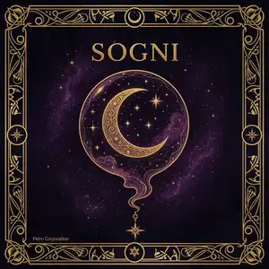
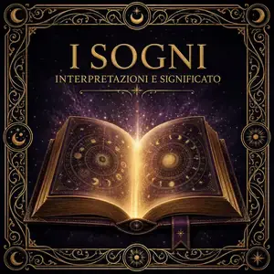

| 1 | L'Italia ('Itaia) | 46 | Il denaro ('E sorde) |
| 2 | Il bimbo ('A criatura) | 47 | Il morto ('O muorto) |
| 3 | Il gatto ('A jatta) | 48 | Il morto che parla ('O muorto ca parla) |
| 4 | Il maiale ('O puorco) | 49 | La carne ('A carne) |
| 5 | La mano ('A mano) | 50 | Il pane ('O pane) |
| 6 | Quella che guarda a terra (Chella ca guarda 'nterra) | 51 | Il giardino ('O ciardino) |
| 7 | Il fucile ('A scuppetta) | 52 | La mamma ('A mamma) |
| 8 | La Madonna ('A Maronna) | 53 | Il vecchio ('O viecchio) |
| 9 | La prole ('A figliata) | 54 | Il cappello ('O cappiello) |
| 10 | I fagioli ('E fasule) | 55 | La musica ('A museca) |
| 11 | I topi ('E surice) | 56 | La caduta ('A caduta) |
| 12 | I soldati ('E surdate) | 57 | Il gobbo ('O scartellato) |
| 13 | Sant'Antonio (Sant'Antonio) | 58 | Il regalo ('O nzirlo) |
| 14 | L'ubriaco ('O mbriaco) | 59 | I peli ('E pile) |
| 15 | Il ragazzo ('O guaglione) | 60 | Il lamento ('O seie) |
| 16 | Il deretano ('O culo) | 61 | Il cacciatore ('O cacciatore) |
| 17 | La sfortuna ('A disgrazia) | 62 | Il morto ammazzato ('O muorto acciso) |
| 18 | Il sangue ('O sanghe) | 63 | La sposa ('A sposa) |
| 19 | La risata ('A resata) | 64 | La marsina ('O sciassa) |
| 20 | La festa ('A festa) | 65 | Il pianto ('O chianto) |
| 21 | La donna nuda ('A femmena annura) | 66 | Le due zitelle ('E ddoie uajolle) |
| 22 | Il pazzo ('O pazzo) | 67 | Il totano nella chitarra ('O totaro dint' 'a chitarra) |
| 23 | Lo scemo ('O scemo) | 68 | La zuppa cotta ('A zuppa cotta) |
| 24 | Le guardie ('E gguardie) | 69 | Sottosopra (Sott'e 'ncoppa) |
| 25 | Natale (Natale) | 70 | Il palazzo ('O palazzo) |
| 26 | La piccola sedia ('A seggiola) | 71 | L'uomo di merda (L'ommo 'e merda) |
| 27 | Il pitale ('O cantero) | 72 | Lo stupore ('A meraviglia) |
| 28 | I seni ('E zzizze) | 73 | L'ospedale ('O spitale) |
| 29 | Il padre dei bimbi ('O pate d' 'e criature) | 74 | La grotta ('A grotta) |
| 30 | Le palle del tenente ('E palle d' 'o tenente) | 75 | Pulcinella (Pulecenella) |
| 31 | Il padrone di casa ('O patrone 'e casa) | 76 | La fontana ('A funtana) |
| 32 | Il capitone ('O capitone) | 77 | I diavoli ('E diavule) |
| 33 | Gli anni di Cristo (L'anne 'e Cristo) | 78 | La bella figliola ('A bella figliola) |
| 34 | La testa ('A capa) | 79 | Il ladro ('O mariuolo) |
| 35 | L'uccellino (L'auciello) | 80 | La bocca ('A vocca) |
| 36 | Le nacchere ('E castagnelle) | 81 | I fiori ('E sciure) |
| 37 | Il monaco ('O monaco) | 82 | La tavola imbandita ('A tavula 'mbandita) |
| 38 | Le sciabolate ('E mazzate) | 83 | Il maltempo ('O maletiempo) |
| 39 | La corda al collo ('A corda 'nganna) | 84 | La chiesa ('A chiesa) |
| 40 | La noia ('A paposcia) | 85 | Le anime del purgatorio ('E l'aneme 'o priatorio) |
| 41 | Il coltello ('O curtiello) | 86 | La bottega ('A puteca) |
| 42 | Il caffè ('O ccafè) | 87 | I pidocchi ('E perucchie) |
| 43 | La donna al balcone (Onna ô balcone) | 88 | I caciocavalli ('E casicavalle) |
| 44 | Le carceri ('O carcere) | 89 | La vecchia ('A vecchia) |
| 45 | Il buon vino ('O vino buono) | 90 | La paura ('A paura) |